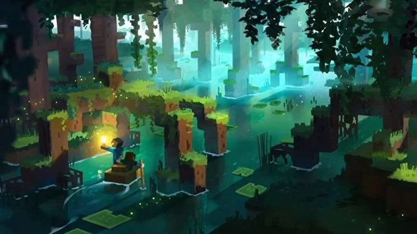

Minecraft The Wild Update
Selasa, 22 Februari 2022

Berbagai elemen yang akan di perbarui pada The Wild Update telah dikonfirmasi, berikut ini adalah daftar yang wajib kamu ketahui sebelum tanggal rilisnya nih!
Tanggal Rilis:
Pada acara Minecraft Live dibeberkan beberapa informasi tentang pembaruan 1.19 tapi tidak diberitahukan secara pasti kapan tanggal rilis dari versi tersebut, tapi dapat dikonfirmasi bahwa akan rilis pada tahun 2022.
Nama:

Sesuai dengan judul untuk pembaruan kali ini diberikan nama The Wild Update.
Akan ada macam-macam konten baru yang dirilis dari The Wild Update, teermasuk pembaruan beberapa bioma baru untuk kamu jelajahi, dan juga Underground City dan Mangrove Swamp loh!
Jenis blok baru juga akan datang ke permainan, serta hewan baru untuk mengisi dunia yang dibuat pemain.
Bioma:
Minecraft versi 1.19 akan memperkenalkan Mangrove Forest, serta beberapa pembaruan besar pada Swamp Biomes.
Deep Dark Biomas yang mendatang akan memberikan pemain kesempatan untuk memperluas penjelajahan mereka ke gua-gua dan kota-kota bawah tanah yang disebutkan di atas.
Deep Dark juga kaan menampilkan blok baru yang disebut Sculk. Juga akan ada Sculk Catalys Block yang akan menyebabkannnnnanyak Sculk terbentuk ketika mob terdekat terbunuh dalam game.
Juga akan ada Sculk Shrieker Block, yang akan mengeluarkan teriakan saat diaktifkan yang akan menyebabkan "kegelapan berdenyut" turun di era tersebut. Kemungkinan akan ada lebih banyak konyen bioma yang ditambahkan selama beberapa bulan ke depan sebelum rilis.